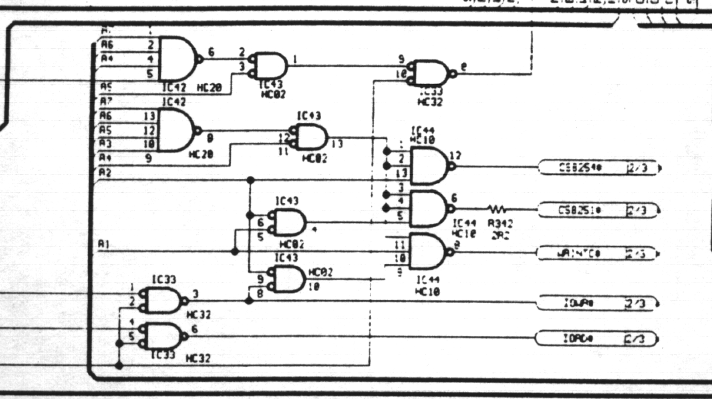
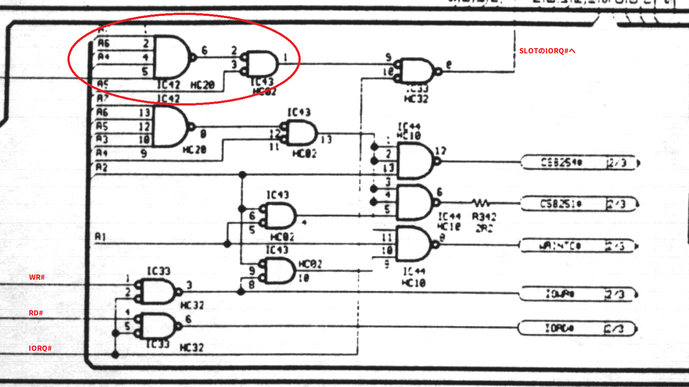

複数の漢字ROM
≪結論≫
(1) FS-A1GTは外付け漢字ROMを利用できない。
(2) 漢字ROM内蔵 MSX2 (※ごく一部の規格違反機種を除く) では、漢字ROMカートリッジを1つだけ装着でき、装着するとカートリッジ側が有効になる。
(3) FS-A1GT以外の機種では、漢字ROMカートリッジを複数搭載すると故障の原因になる。危険。
MSXの標準漢字ROMは、I/Oポートの D8h～DBh に繋がっています。
そのため、複数の装着はバス競合によって本体を破壊する恐れがあります。
≪ バス競合 ≫
例えば、SLOT#1 に漢字ROM-A, SLOT#2 に漢字ROM-B が装着されていたとします。
AとBはフォントが異なり、同じ字でも微妙に形が違います。
プログラムから漢字フォントが必要になったときに、D8h-D9h にアクセスします。
すると、AとBは、どちらも「自分がフォントデータを返すアドレスだ！」と認識して
データバスにフォントデータを出力し始めます。
データバスの各ビットにフォントの形状が出てきますので、特に形状が違う部分で
一方は 1 を示す 5V を、他方は 0 を示す 0V を出力してしまいます。
これらは単純に直結しているので、ショートしたような状態になるわけです。
同じ値だったとしても、微妙に電圧が異なったりしているので、出力しているつもりの回路に
電流が流れ込んでおかしなことが起こるかもしれません。
MSX2以降 (※ごく一部を除く) では、本体に漢字ROMを内蔵している場合、デフォルトでは本体側が
無効になっており、I/Oポートの F5h の bit0 に 1を書くと第1水準JIS漢字、bit1 に 1を書くと第2水準JIS漢字
が有効になる仕組みになっています。F5h はBIOSが管理するモノなので、一般のプログラムから読み書きしてはダメです。
F5h は書き込みONLYで、1を書いたときに有効になるだけです。(0を書いて無効にすることは出来ないと思います。未確認。)
MSXの漢字ROMは、特定の文字が決まった形状であることが決められており、この文字フォントを読み出せれば漢字ROMが
接続されていると認識します。
BIOSは、本体側漢字ROMが無効の状態のままで、漢字ROMが装着されているかを調べます。
装着されていればそのまま、されていなければ本体側を有効にします。
この仕組みにより、本体に漢字ROMが搭載されていても、SLOTに漢字ROMを1つだけ装着できるようになりました。
漢字ROMカートリッジで後付けした方が、本体側漢字ROMよりも優先になるため、本体の漢字フォントが気に入らなければ、
好きな漢字フォントの漢字ROMカートリッジを装着することで、フォントを変更できるようになっているわけです。
しかし、この仕様は不完全なため、複数のSLOTにそれぞれ漢字ROMカートリッジを装着すると、やはりバス競合が発生します。
Panasonic の FS-A1GT は、この問題の回避策として、漢字ROMのアクセスはカートリッジスロットには出さず、常に本体側漢字ROM
が有効になるように、信号をブロックする回路が実装されているようです。
好きなフォントに切り替えられる仕組みはなくなってしまっていますが、A1GTの方が「安全な構成」と言えるのでは無いでしょうか。
SLOTに漢字ROMカートリッジを搭載しても、無視されます。
同じ turboR である FS-A1ST にはこの回路は無いようです。
ただ、FS-A1GTのころには、漢字ROM搭載の新しいカートリッジなど無かったと思いますので、A1GTになってから対策を入れるというのも不自然。
「(おそらく)カートリッジタイプの漢字ROMは遅い」ので、内蔵の高速な漢字ROM限定にした、と考えるのが自然かもしれませんね。
もし、FS-A1STユーザーで、外付け漢字ROMを高速モードで使ったときに、文字化けするような症状を確認できた場合、お知らせいただけると嬉しいです。
≪ FS-A1GTに漢字ROM搭載カートリッジを装着した場合としない場合のKanjiBASICの表示 ≫
Twitter
HBI-J1 は、MSX-JE + KanjiBASIC + 漢字ROM(JIS1,JIS2) の統合カートリッジですが、A1GTに装着しても漢字フォントが変わらないことが確認できます。
Twitter
HBI-J1 の漢字フォントはこちらで確認できますね。「漢」の字の形状が明らかに違います。
Twitter
FS-A1GTに追加されているブロック回路。これのおかげで、SLOTに漢字ROMアクセスの信号が出ていかなくなっているようです。
Twitter
Twitter
FS-A1STには無いようです。
≪ 漢字ROMアクセスブロック回路 ≫

漢字ROMのI/Oは D8h, D9h, DAh, DBh なので
D8h = 11011000
D9h = 11011001
DAh = 11011010
DBh = 11011011
これを一網打尽に検出するには、0でも1でもどちらでもいいbitをXにすると
110110XX
です。
信号の行き先を確認してみます。

まず、マルで囲った部分によって IOREQ# がマスクされるのがわかります。
IC43 の出力は、 ~(~(A7 & A6 & A4 & /M1)) & ~A5 となっています。
少し変形すると、(A7 & A6 & ~A5 & A4 & /M1) なので、/M1 が 1 で { A7,A6,A5,A4 } = 4'b1101 のときに 1 です。仮にKMASKと名付けます。
IC33 は、~(~KMASK & ~/IOREQ) なので、ドモルガンの定理で KMASK | /IOREQ と等価です。
これが SLOT の /IOREQ に繋がるわけですから、KMASK = 1 の時に SLOT の /IOREQ は無効を示す 1 になるわけです。
0xD0～0xDFのアクセスは、/IOREQがカートリッジスロットに出てこない構造になっているということですね。
なかなか面白いですね。
2021年10月03日 更新
[戻る]